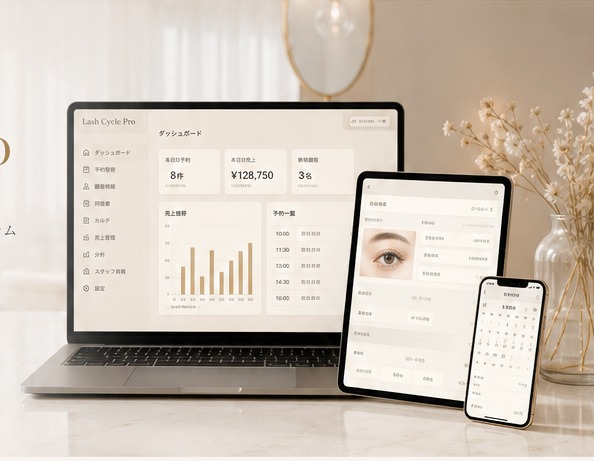

Lush Cycle Pro
アイラッシュサロン Lucia がモデルとなった
Lush Cycle Pro
現場の声から生まれた、アイリストのための経営管理システム。Lucia のサロン運営ノウハウを基盤に開発され、予約・顧客管理から売上分析まで日々の業務を一つにまとめます。
Lark Master — Official Lark Japan
Eyelash Salon Lucia のサロン運営ノウハウをモデルに開発されたシステムとして、公式 Lark Japan 主催の招待制イベント「Lark Master」にて発表されました。
主な機能
予約管理
予約・変更・キャンセルを一元管理。ダブルブッキングも防止します。
顧客情報管理
お客様の情報・施術履歴を安全に管理し、リピートにつなげます。
同意書
電子同意書でペーパーレス化。署名・保管をオンラインで完結。
カルテ
施術履歴・デザイン・写真を一元管理。次回提案も簡単に。
売上管理
売上・入金・メニュー別集計を自動化。日次・月次の確認がシンプルに。
分析
予約状況・顧客動向をグラフで可視化。データに基づく運営をサポート。
スタッフ共有
スタッフ間で情報・タスクを共有。チーム全体の連携と生産性を向上。
導入で得られること
業務を効率化
日々の管理業務を自動化し、施術やお客様対応に集中できます。
顧客満足度の向上
履歴やデザインを把握して丁寧な接客。リピート率と信頼を高めます。
サロンの成長を支援
データに基づく改善で、売上アップと安定経営を実現します。